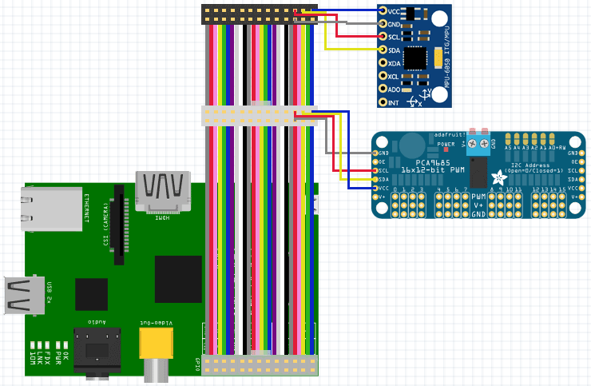
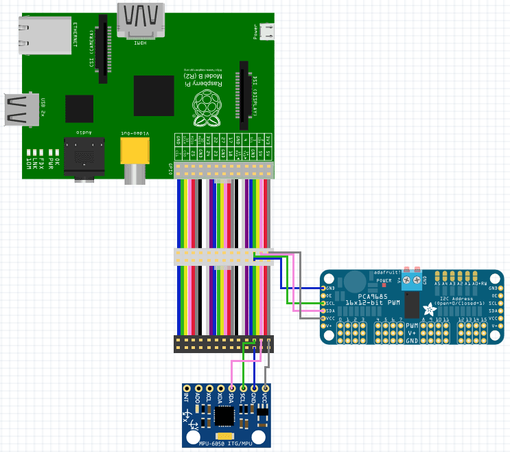
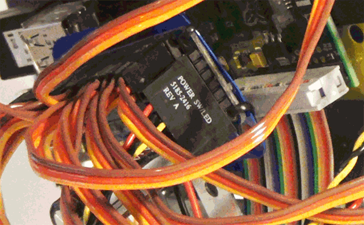
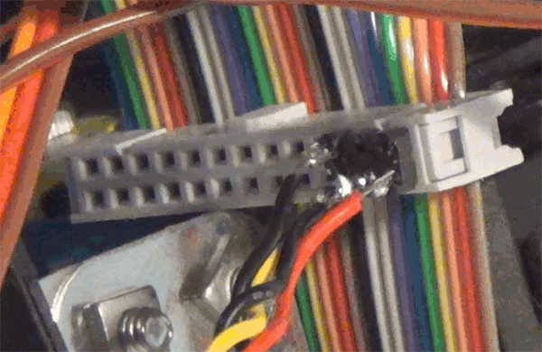
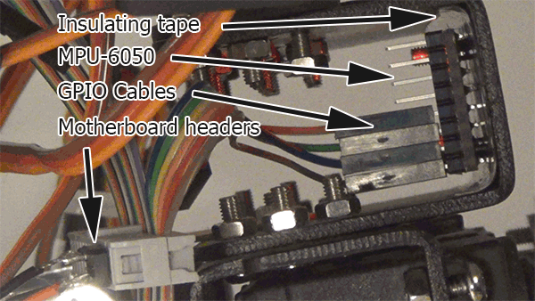

Use the following diagrams to connect an Adafruit servo driver and / or MPU6050 gyro and accelerometer
 Cabling needs to be created to connect the servo driver to the GPIO cable. One solution is to use salvaged parts.
A salvaged cable from a PC power switch fits the pins on the servo driver.
On the other end, the headers from an old motherboard can be used to create an interface.
The MPU-6050 is mounted in the waist bracket of the robot in the image. A GPIO cable with individual connectors can plug directly into the IMU.
Connect servos to the channels on the Adafruit servo driver
The Adafruit servo servo driver requires a dedicated power supply. A 5v or 6v mains adapter or battery is recommended.
4 AA cells can be used for experiments involving around 5 servos.
A mains power supply which provides 5 - 6 volts, 1 - 3 amps can also be used to power the Adafruit servo driver.
Check out the Youtube channel for experiments with different power configurations:
youtube.com/user/AllMyServos